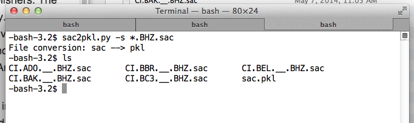
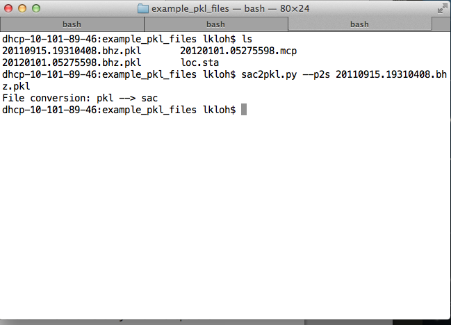

6. SAC Input/Output procedures for AIMBAT¶
6.1. Converting from SAC to PKL files¶
Place the SAC files you want to convert to a pickle (PKL) file into the same folder. Suppose, for instance, they are BHZ channels. Note that the SAC files must be of the same channel. cd into that folder, and run:
sac2pkl.py -s *.BHZ.sac
The output should be a PKL file in the same folder as the sac files.
6.2. Converting from PKL to SAC files¶
cd into the folder containing the PKL file that you wish to convert into SAC files, and run:
sac2pkl.py --p2s <name-of-file>.pkl
The SAC files contained within will output into the same folder as the PKL file is stored in.
